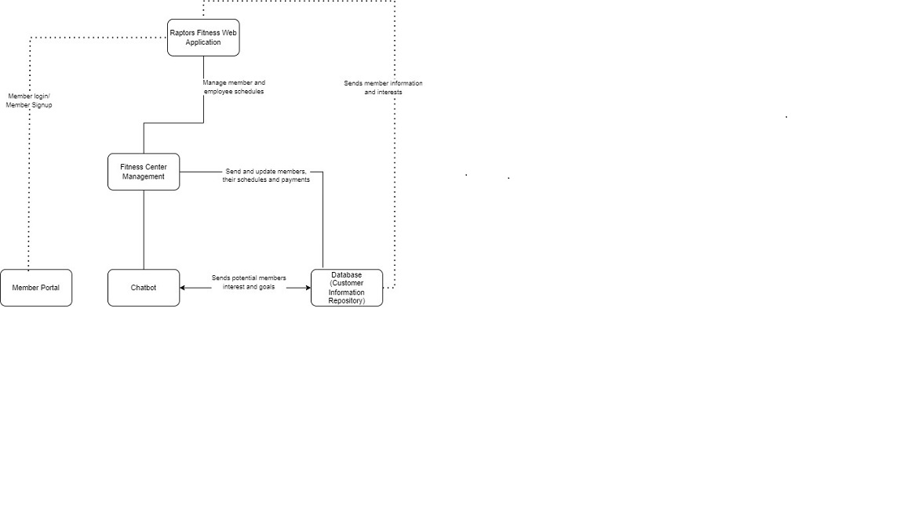

1. BUSINESS CONTEXT DIAGRAM

Requirement Scope Area
This scope area focuses on the operations and management of Raptors Fitness as a physical fitness center.
It includes activities related to facility management, staff coordination, equipment maintenance, and customer
service within the physical fitness center.
External Entity
-
Fitness Center Staff: Represents the employees and personnel who work within the
physical fitness center. This includes fitness trainers, front desk staff, cleaning and maintenance crew,
and any other employees directly involved in the day-to-day operations of the fitness center.
-
Fitness Equipment Suppliers: External vendors or companies that provide fitness
equipment and supplies to the Raptors Fitness center. They deliver and maintain exercise machines, weights,
fitness accessories, and other equipment needed to keep the fitness center well-equipped and up-to-date.
-
Cleaning and Maintenance Services: External providers responsible for cleaning and
maintaining the fitness center's facilities. They perform routine cleaning, repair, and maintenance tasks
to ensure a safe and hygienic environment for members. This includes tasks such as equipment maintenance,
restroom cleaning, and facility repairs.
-
Fitness Class Instructors: External individuals or contractors who lead fitness classes
and training sessions within the fitness center. They have expertise in various fitness disciplines, such
as yoga, aerobics, or martial arts, and conduct scheduled classes to help members achieve their fitness
goals.
-
Health and Safety Inspectors: External professionals or regulatory authorities
responsible for ensuring compliance with health and safety standards within the fitness center. They
conduct inspections, review safety protocols, and provide recommendations to ensure the fitness center's
facilities and practices meet safety and health regulations, ensuring member well-being.
Information Flows
-
Equipment Maintenance Requests: Raptors Fitness staff (Fitness Center Staff)
communicate maintenance and repair requests to external Fitness Equipment Suppliers. These requests include
details about the specific equipment requiring attention, such as model numbers and issue descriptions.
-
Cleaning and Maintenance Reports: Cleaning and Maintenance Services submit weekly
reports to Raptors Fitness management. These reports outline the cleaning and maintenance activities
performed within the fitness center during the week. Reports may include details about tasks completed,
equipment inspected, and repairs made.
-
Fitness Class Schedule Updates: Raptors Fitness management provides updates to Fitness
Class Instructors regarding changes to the fitness class schedule. This communication ensures that
instructors are aware of class additions, cancellations, or rescheduling.
-
Safety Inspection Findings: Health and Safety Inspectors communicate their inspection
findings to Raptors Fitness management. These findings detail any safety and compliance issues discovered
during inspections and may include recommendations for corrective actions.
-
Member Assistance Requests: Raptors Fitness members can request assistance from Fitness
Center Staff. These requests may include seeking guidance on how to use specific exercise machines,
requesting information about fitness classes, or seeking general assistance within the fitness center.
-
Member Feedback and Suggestions: Raptors Fitness members have the ability to provide
feedback and suggestions regarding their experiences at the fitness center. This feedback can be submitted
through the web application or in-person to Fitness Center Staff. Raptors Fitness management collects and
reviews this feedback regularly to improve services, address concerns, and make enhancements to the
fitness center's offerings. Additionally, members may receive responses or follow-up communications based
on their feedback to ensure a positive experience.